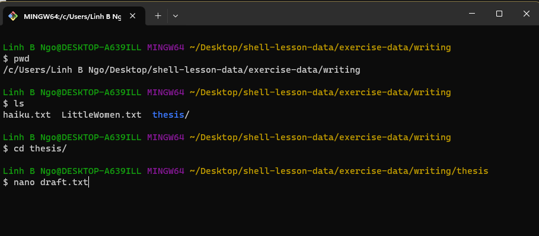
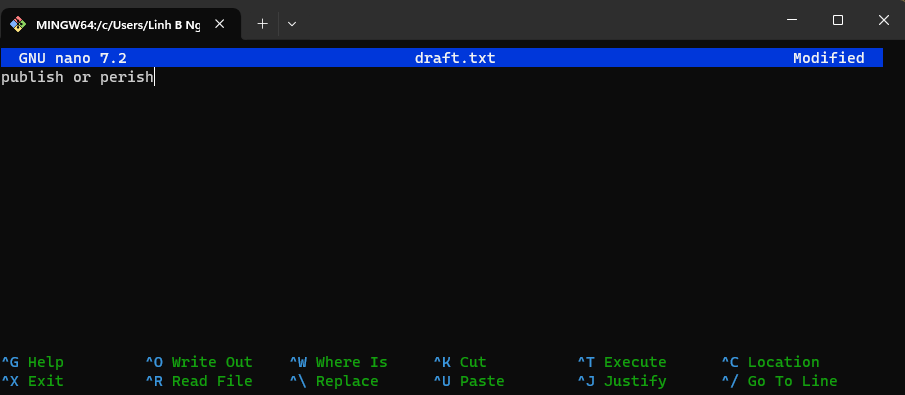
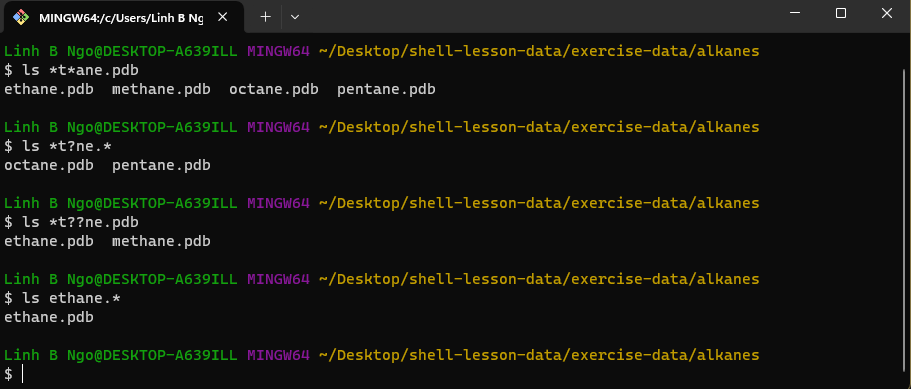

Working With Files and Directories#
1. Names for Files and Directories
Complicated names of files and directories can make your life very painful when working on the command line. Here we provide a few useful tips for the names of your files from now on.
Don’t use whitespaces. White spaces can make a name more meaningful but since whitespace is used to break arguments on the command line is better to avoid them on name of files and directories. You can use
-or_instead of whitespace. Commands treat names starting with-as options.Stay with letters, numbers,
.(period),-(dash) and_(underscore).Don’t begin the name with
-.
If you need to refer to names of files or directories that have whitespace or another non-alphanumeric character you should put quotes around the name.
2. Creating directories: mkdir
Create a directory called
thesis, and check for its existence.Also check that there is nothing inside the newly created directory.
cd ~/shell-lesson-data/exercise-data/writing
mkdir thesis
ls -F
Important for directory and file names in Linux!!!
Do not use spaces/special characters in file and directory names.
Use
-,_, and.for annotation, but do not begin the names with them.
3. Challenge: mkdir creating multiple directories
What is the role of the
-pflag in the following commands:
mkdir ../project/data
ls -F ../project
mkdir -p ../project/data
mkdir -p ../project/report ../project/results
ls -F ../project
Solution
-p allows the creation of all directories
on the specified path, regardless whether any directory on
that path exists.
4. Creating files: nano (or vim)
Linux terminal environment is text-only, hence its editors are text only as well.
nanovimemacs.
Fun read: One does not simply exist vim
We are using nano (lowest learning curve).
Create a file named
draft.txtinsidethesis.Type in the contents shown in the screenshot.
pwd
ls
cd thesis
nano draft.txt

Enter the text as shown in the screenshot below

To save the text, you need to press
Ctrl+Okeys:Press and hold
Ctrlthen pressO.You will be asked whether to keep the same file name or to edit the name. Press
Enterto confirm.
To quit nano, press
Ctrl+X.If you have not saved the text before, nano will ask if you want to save the file first and confirm the name with
YorN.
5. Moving files and directories: mv
mvis short for move. It will move a file/directory from one location to another.
cd ~/shell-lesson-data/exercise-data/writing
ls thesis
mv thesis/draft.txt thesis/quotes.txt
ls thesis
mv thesis/quotes.txt .
ls thesis
ls
6. Challenge: Moving files to a new folder
After running the following commands, Jamie realizes that she put the files
sucrose.datandmaltose.datinto the wrong folder. The files should have been placed in therawfolder.
$ ls -F
analyzed/ raw/
$ ls -F analyzed
fructose.dat glucose.dat maltose.dat sucrose.dat
$ cd analyzed
Fill in the blanks to move these files to the
rawfolder:
$ mv sucrose.data maltose.data ____/_____
Solution
$ mv sucrose.data maltose.data ../raw
7. Copying files and directories: cp
cpstands for copy. It copies a file or directory to a new location, possibly with a new name.
$ cp quotes.txt thesis/quotations.txt
$ ls quotes.txt thesis/quotations.txt
$ cp -r thesis thesis_backup
$ ls thesis thesis_backup
8. Challenge: Renaming files
Suppose that you created a plain-text file in your current directory to contain a list of the statistical tests you will need to do to analyze your data, and named it:
statstics.txtAfter creating and saving this file you realize you misspelled the filename! You want to correct the mistake, which of the following commands could you use to do so?
cp statstics.txt statistics.txt
mv statstics.txt statistics.txt
mv statstics.txt .
cp statstics.txt .
Solution
No. While this would create a file with the correct name, the incorrectly named file still exists in the directory and would need to be deleted.
Yes, this would work to rename the file.
No, the period(.) indicates where to move the file, but does not provide a new file name; identical file names cannot be created.
No, the period(.) indicates where to copy the file, but does not provide a new file name; identical file names cannot be created.
9. Challenge: Moving and copying
What is the output of the last
lscommand in the sequence shown below?
$ pwd
/home/rammy/data
$ ls
proteins.dat
$ mkdir recombined
$ mv proteins.dat recombined/
$ cp recombined/proteins.dat ../proteins-saved.dat
$ ls
proteins-saved.dat recombined
recombined
proteins.dat recombined
proteins-saved.dat
Solution
No,
proteins-saved.datis located at/home/rammy/Yes
proteins.datis located at/home/rammy/data/recombinedNo,
proteins-saved.datis located at/home/rammy/
10. Removing files and directories: rm
Returning to the
shell-lesson-data/exercise-data/writingdirectory, let’s tidy up this directory by removing the quotes.txt file we created.The command we’ll use for this is
rm(short for remove):
$ cd ~/shell-lesson-data/exercise-data/writing
$ ls
$ rm quotes.txt
$ ls quotes.txt
$ rm thesis
$ rm -r thesis
11. Wildcards
*is a wildcard, which matches zero or more characters.Inside
shell-lesson-data/exercise-data/alkanesdirectory:*.pdbmatchesethane.pdb,propane.pdb, and every file that ends with ‘.pdb’.p*.pdbonly matchespentane.pdbandpropane.pdb, because the ‘p’ at the front only matches filenames that begin with the letter ‘p’.
?is also a wildcard, but it matches exactly one character. So?ethane.pdbwould matchmethane.pdb*ethane.pdbmatches bothethane.pdb, andmethane.pdb.
Wildcards can be used in combination with each other
???ane.pdbmatches three characters followed byane.pdb.cubane.pdb,ethane.pdb,octane.pdb.
When the shell sees a wildcard, it expands the wildcard to create a list of matching filenames before running the command that was asked for. It is the shell, not the other programs, that deals with expanding wildcards.
Change into
shell-lesson-data/exercise-data/alkanesand try the following commands
$ ls *t*ane.pdb
$ ls *t?ne.*
$ ls *t??ne.pdb
$ ls ethane.*

12. Challenge: more on wildcards
Sam has a directory containing calibration data, datasets, and descriptions of the datasets:
.
├── 2015-10-23-calibration.txt
├── 2015-10-23-dataset1.txt
├── 2015-10-23-dataset2.txt
├── 2015-10-23-dataset_overview.txt
├── 2015-10-26-calibration.txt
├── 2015-10-26-dataset1.txt
├── 2015-10-26-dataset2.txt
├── 2015-10-26-dataset_overview.txt
├── 2015-11-23-calibration.txt
├── 2015-11-23-dataset1.txt
├── 2015-11-23-dataset2.txt
├── 2015-11-23-dataset_overview.txt
├── backup
│ ├── calibration
│ └── datasets
└── send_to_bob
├── all_datasets_created_on_a_23rd
└── all_november_files
Before heading off to another field trip, Sam wants to back up her data and send datasets created the 23rd of any month to Bob. Sam uses the following commands to get the job done:
$ cp *dataset* backup/datasets
$ cp ____calibration____ backup/calibration
$ cp 2015-____-____ send_to_bob/all_november_files/
$ cp ____ send_to_bob/all_datasets_created_on_a_23rd/
Help Sam by filling in the blanks.
The resulting directory structure should look like this
.
├── 2015-10-23-calibration.txt
├── 2015-10-23-dataset1.txt
├── 2015-10-23-dataset2.txt
├── 2015-10-23-dataset_overview.txt
├── 2015-10-26-calibration.txt
├── 2015-10-26-dataset1.txt
├── 2015-10-26-dataset2.txt
├── 2015-10-26-dataset_overview.txt
├── 2015-11-23-calibration.txt
├── 2015-11-23-dataset1.txt
├── 2015-11-23-dataset2.txt
├── 2015-11-23-dataset_overview.txt
├── backup
│ ├── calibration
│ │ ├── 2015-10-23-calibration.txt
│ │ ├── 2015-10-26-calibration.txt
│ │ └── 2015-11-23-calibration.txt
│ └── datasets
│ ├── 2015-10-23-dataset1.txt
│ ├── 2015-10-23-dataset2.txt
│ ├── 2015-10-23-dataset_overview.txt
│ ├── 2015-10-26-dataset1.txt
│ ├── 2015-10-26-dataset2.txt
│ ├── 2015-10-26-dataset_overview.txt
│ ├── 2015-11-23-dataset1.txt
│ ├── 2015-11-23-dataset2.txt
│ └── 2015-11-23-dataset_overview.txt
└── send_to_bob
├── all_datasets_created_on_a_23rd
│ ├── 2015-10-23-dataset1.txt
│ ├── 2015-10-23-dataset2.txt
│ ├── 2015-10-23-dataset_overview.txt
│ ├── 2015-11-23-dataset1.txt
│ ├── 2015-11-23-dataset2.txt
│ └── 2015-11-23-dataset_overview.txt
└── all_november_files
├── 2015-11-23-calibration.txt
├── 2015-11-23-dataset1.txt
├── 2015-11-23-dataset2.txt
└── 2015-11-23-dataset_overview.txt
Solution
$ cp *calibration.txt backup/calibration
$ cp 2015-11-* send_to_bob/all_november_files/
$ cp *-23-dataset* send_to_bob/all_datasets_created_on_a_23rd/